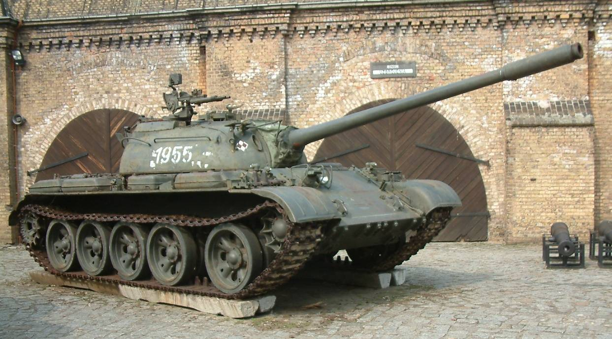
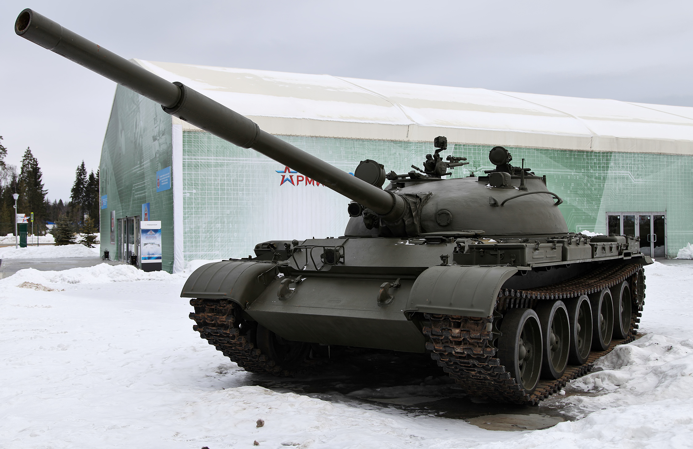
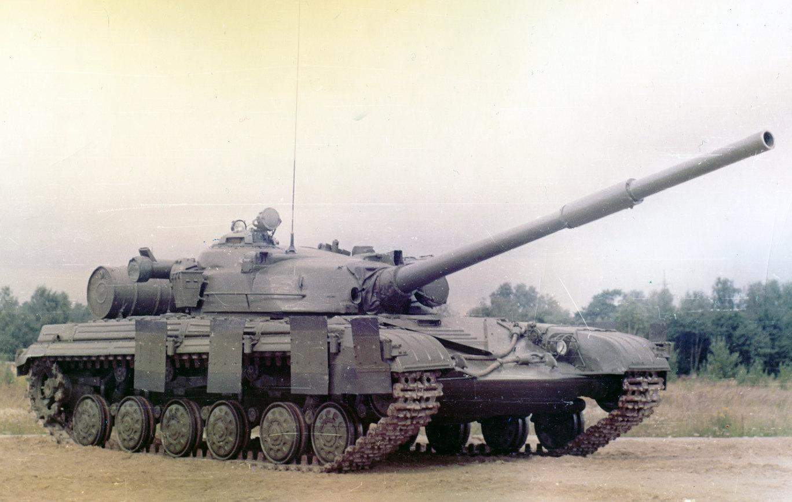
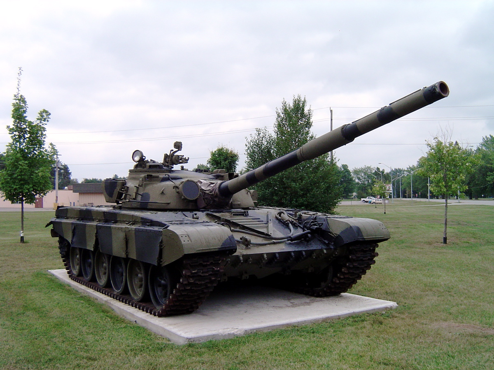
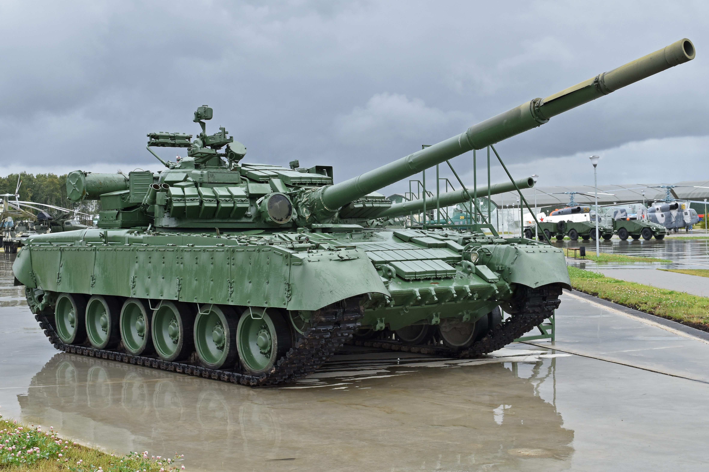
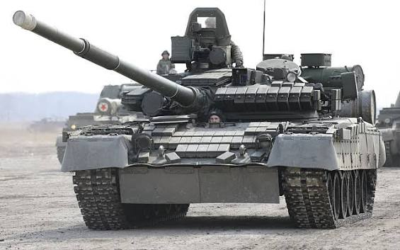

Introducción
Durante la Guerra Fria, la Union Sovietica desarrollo una de las mayores flotas de carros de combate del mundo. En esta página repasamos seis modelos que muestran como evoluciono el diseño: cañones cada vez mas potentes, cargadores automaticos, motores de turbina y blindaje reactivo.
T-55

Evolucion del T-54, fue el tanque mas fabricado de su epoca y se exporto a decenas de paises. Sencillo, robusto y facil de mantener.
- Año: 1958
- Cañón: 100 mm D-10T (estriado)
- Novedad: sistema de protección contra armas de destruccion masiva (NBQ)
T-62

Primer tanque soviético de serie con cañón de anima lisa, pensado para mejorar la penetración frente a los blindajes occidentales.
- Año: 1961
- Cañón: 115 mm U-5TS
- Novedad: torreta más grande y mayor potencia de fuego
T-64A

Un diseño muy avanzado para su tiempo. Redujo la tripulación gracias al cargador automático y se reservó para las mejores unidades sovieticas.
- Año: 1969
- Cañón: 125 mm 2A46
- Novedad: cargador automatico y tripulacion de 3
T-72

Version más sencilla y barata de fabricar que el T-64, pensada para la producción en masa. Se convirtio en el tanque sovietico más exportado.
- Año: 1973
- Cañón: 125 mm 2A46
- Novedad: fabricacion en masa con cargador automatico
T-80

Fue el primer tanque de producción en serie del mundo con motor de turbina de gas, lo que le daba una gran velocidad y aceleración.
- Año: 1976
- Cañón: 125 mm 2A46
- Novedad: motor de turbina de gas
T-80BV

Version del T-80B con paneles de blindaje reactivo en el casco y la torreta, y capacidad para lanzar misiles a través del cañón.
- Año: 1985
- Cañón: 125 mm 2A46 + misil guiado 9M112 Kobra
- Novedad: blindaje reactivo Kontakt-1
Tabla comparativa
| Modelo | Año | Cañón | Tripulación |
|---|---|---|---|
| T-55 | 1958 | 100 mm | 4 |
| T-62 | 1961 | 115 mm | 4 |
| T-64A | 1969 | 125 mm | 3 |
| T-72 | 1973 | 125 mm | 3 |
| T-80 | 1976 | 125 mm | 3 |
| T-80BV | 1985 | 125 mm | 3 |